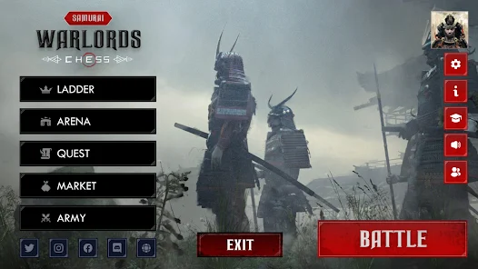

Lumighost · Commercial (Unreleased)
Samurai Warlords
Chess game with samurai warriors, 3D character customization, and multiplayer-ready gameplay systems.
- Role
- Unity Developer
- Timeline
- 1.5 years
- Team Size
- 5 people

Project highlight
- Built a cutscene stack that combined Timelines, Cinemachine, and splines to choreograph camera moves and hit dramatic angles during captures and story beats.
- For combat presentation, layered a third-party mesh-cutting solution with blood particle effects and decals so heavy hits read visceral without ballooning animation cost.
What I built
- Replaced classic chess pieces with 3D samurai characters.
- Implemented modular character customization (skins, weapons, armor) with preview system.
- Created cutscene and capture effects systems, including synchronized transitions.
- Built multiplayer client/server features with Photon.
Why it is no longer available
The project did not reach release because it was an NFT project, and the clients decided to stop development.